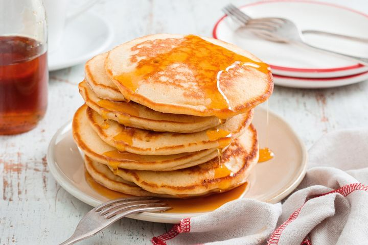

Pancakes

Description
A simple and easy to prepare pancake recipe.
Ingredients
- 1 1/2 cups milk
- 1 egg
- 2 tsp vanilla extract
- 2 cups self-raising flour
- 1/4 tsp Coles Bicarbonate Soda
- 1/3 cup caster sugar
- 25g butter, melted
- Butter, to serve
Steps
- Whisk milk, egg and vanilla together in a jug. Sift flour and bicarbonate of soda into a bowl. Stir in sugar. Make a well in centre. Add milk mixture. Whisk until just combined.
- Heat a large non-stick frying pan over medium heat. Brush pan with butter. Using 1/4 cup mixture per pancake, cook 2 pancakes for 3 to 4 minutes or until bubbles appear on surface. Turn and cook for 3 minutes or until cooked through. Transfer to a plate. Cover loosely with foil to keep warm. Repeat with remaining mixture, brushing pan with butter between batches. Serve.